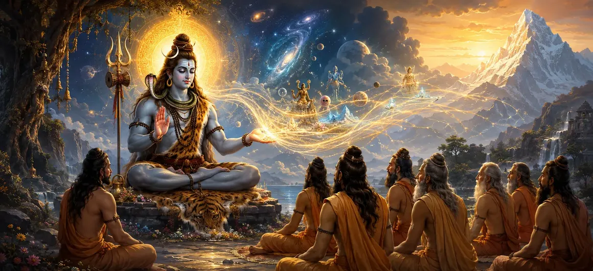

पवित्र विद्या की उत्पत्ति
वायवीय संहिता का पहला अध्याय पवित्र ज्ञान की दिव्य शुरुआत का खुलासा करता है, जो भगवान शिव से निकलने वाली ब्रह्मांडीय ज्ञान की शाश्वत धारा का पता लगाता है।
यह अध्याय संपूर्ण संहिता के लिए मूलभूत दार्शनिक स्वर निर्धारित करता है, यह खोज करता है कि सर्वोच्च सत्य मानव चेतना को कैसे बदलता है।
साधकों को आध्यात्मिक संचरण की पवित्र वंशावली से परिचित कराया जाता है जो युगों-युगों तक दिव्य विद्या को संरक्षित रखती है।
अध्याय 1 की मुख्य बातें
दिव्य आरंभ
पवित्र ज्ञान की सर्वोच्च उत्पत्ति का पता सीधे भगवान शिव से चलता है।
पवित्र संचरण
यह पता लगाता है कि कैसे पारलौकिक ज्ञान ऋषियों से साधकों तक प्रवाहित होता है।
लौकिक दृष्टि
वायवीय संहिता शिक्षाओं के विशाल दायरे पर प्रकाश डालता है।
मन की पवित्रता
उच्च आध्यात्मिक विद्या प्राप्त करने के लिए आवश्यक आंतरिक तैयारी पर जोर देता है।
आध्यात्मिक मुक्ति
पवित्र विद्या को सीधे परम शांति की प्राप्ति से जोड़ता है।
पूछताछ का मार्ग
प्रबुद्ध संतों द्वारा पूछे गए गहन प्रश्नों के लिए मंच तैयार करता है।
इस अध्याय में मुख्य विषय
पवित्र विद्या की शुरूआत
वायवीय संहिता आध्यात्मिक ज्ञान की उत्पत्ति की खोज से शुरू होती है जो आत्माओं को सांसारिक बंधन और अज्ञान से मुक्त करती है।
इस पवित्र विद्या को मानव आविष्कार के रूप में नहीं, बल्कि शिव द्वारा स्थापित ब्रह्मांडीय व्यवस्था की प्रत्यक्ष अभिव्यक्ति के रूप में प्रस्तुत किया गया है।
भगवान शिव सर्वोच्च स्रोत के रूप में
भगवान शिव को सभी उत्कृष्ट ज्ञान, योग और मुक्ति सिद्धांतों के अंतिम भंडार और स्रोत के रूप में प्रकट किया गया है।
उनकी असीम करुणा के माध्यम से, यह ज्ञान परम सत्य की तलाश करने वाले सभी प्राणियों के कल्याण के लिए प्रकट होता है।
ऋषि-मुनियों की वंशावली
अध्याय में बताया गया है कि कैसे प्रबुद्ध संतों ने ध्यान दृष्टि और दिव्य रहस्योद्घाटन के माध्यम से इस सर्वोच्च विद्या को प्राप्त किया।
यह अखंड वंशावली यह सुनिश्चित करती है कि शिक्षाओं की शुद्धता और शक्ति पीढ़ियों तक अक्षुण्ण बनी रहे।
ज्ञान का अंतिम उद्देश्य
सच्ची पवित्र विद्या का उद्देश्य द्वैत के भ्रम को दूर करना और सर्वोच्च चेतना के साथ एकता की अनुभूति को जागृत करना है।
यह बौद्धिक जिज्ञासा को गहन अनुभवात्मक ज्ञान और आध्यात्मिक स्वतंत्रता में बदल देता है।
बयाना साधक की योग्यताएँ
वायवीय संहिता को वास्तव में आत्मसात करने के लिए, एक साधक को विनम्रता, ईमानदारी, मानसिक अनुशासन और परमात्मा के प्रति समर्पण विकसित करना होगा।
পবিত্র হৃদয় এমন এক উর্বর ভূমি হিসেবে কাজ করে যেখানে পবিত্র জ্ঞান গভীরভাবে শিকড় গেড়ে প্রস্ফুটিত হয়।एक शुद्ध हृदय उपजाऊ भूमि के रूप में कार्य करता है जहाँ पवित्र ज्ञान गहरी जड़ें जमाता है और खिलता है।
পবিত্র হৃদয় এমন এক উর্বর ভূমি হিসেবে কাজ করে যেখানে পবিত্র জ্ঞান গভীরভাবে শিকড় গেড়ে প্রস্ফুটিত হয়।संतों की पूछताछ की तैयारी
पवित्र विद्या की उत्पत्ति स्थापित करने के बाद, अध्याय उन महत्वपूर्ण प्रश्नों के लिए कथा तैयार करता है जो इकट्ठे हुए ऋषि जल्द ही पूछेंगे।
यह संवाद प्रारूप निर्धारित करता है जो संहिता की गहन शिक्षाओं को आगे बढ़ाता है।
अध्याय 2 की ओर
अध्याय 1 में स्थापित पवित्र विद्या की उत्पत्ति के साथ, पाठ सुचारू रूप से अध्याय 2, 'संतों के प्रश्न' में परिवर्तित हो जाता है।
अध्याय 2 में भक्ति, ज्ञान और मुक्ति के संबंध में ऋषियों द्वारा उठाई गई विशिष्ट जिज्ञासाओं का विवरण दिया गया है।
अध्याय 1 की मुख्य शिक्षाएँ
शिव की कृपा
सभी प्रामाणिक पवित्र ज्ञान भगवान शिव की कृपा से उत्पन्न होते हैं।
शाश्वत वंश
पवित्र विद्या प्रबुद्ध संतों की एक अटूट श्रृंखला के माध्यम से बहती है।
अनुभवात्मक सत्य
बुद्धि मात्र बौद्धिक अध्ययन से आगे बढ़कर प्रत्यक्ष अनुभूति की ओर ले जाती है।
प्राप्तकर्ता की पवित्रता
दिव्य ज्ञान को बनाए रखने के लिए मानसिक स्पष्टता और भक्ति आवश्यक है।
मुक्तिदायक शक्ति
पवित्र विद्या का अंतिम लक्ष्य सांसारिक दुःख की पूर्ण समाप्ति है।
पूछताछ द्वार
अध्याय 2 में खोजे गए गहन संवादों के लिए साधक को तैयार करता है।
आध्यात्मिक चिंतन
पवित्र विद्या की उत्पत्ति कोई ऐतिहासिक घटना नहीं है, बल्कि हृदय के भीतर चमकती एक शाश्वत वास्तविकता है। भगवान शिव की शिक्षाओं से जुड़कर, साधक अपने जीवन को लौकिक सत्य और सर्वोच्च मुक्ति के साथ जोड़ देता है।
अध्याय 1 का संदेश जीना
आध्यात्मिक ग्रंथों के अध्ययन को श्रद्धा के साथ करें, यह पहचानें कि सच्चा ज्ञान आंतरिक परिवर्तन को जागृत करता है।
एक ग्रहणशील और शुद्ध मन विकसित करें ताकि दिव्य ज्ञान आपके दैनिक कार्यों और विचारों का मार्गदर्शन कर सके।
अपनी आध्यात्मिक यात्रा को भगवान शिव द्वारा दर्शाए गए अनुग्रह के शाश्वत स्रोत में स्थापित होने दें।
प्रमुख आध्यात्मिक अवधारणाएँ
वायवीय संहिता की शिक्षा का शुभ प्रारम्भ।
भगवान शिव से पवित्र ज्ञान का दिव्य उद्गम।
अखंड वंशावली और प्रबुद्ध संतों के माध्यम से संचरण।
सर्वोच्च विद्या जो परम मुक्ति और शांति प्रदान करती है।
आध्यात्मिक तल्लीनता के लिए बुद्धि की शुद्धि आवश्यक है।
अध्याय 2 की ओर ले जाने वाली मूलभूत जांच।
अध्याय सारांश
वायवीय संहिता अध्याय 1 पवित्र विद्या की उत्पत्ति प्रस्तुत करता है। भगवान शिव से पारलौकिक ज्ञान की दिव्य शुरुआत, ऋषियों की वंशावली, ज्ञान का उद्देश्य और साधक की योग्यताओं का विवरण देते हुए, यह अध्याय संहिता की दार्शनिक नींव स्थापित करता है। यह अध्याय 2, 'संतों के प्रश्न' के लिए मंच तैयार करता है, जो शिव पुराण की गहन आध्यात्मिक खोज को जारी रखता है।
अक्सर पूछे जाने वाले प्रश्न
1. वायवीय संहिता अध्याय 1 का प्राथमिक विषय क्या है?
अध्याय 1 पवित्र विद्या की दिव्य उत्पत्ति का पता लगाता है, यह पता लगाता है कि कैसे सर्वोच्च ब्रह्मांडीय ज्ञान भगवान शिव से निकलता है और आध्यात्मिक मुक्ति के लिए मानवता तक प्रवाहित होता है।
2. शिव पुराण में वायवीय संहिता क्यों महत्वपूर्ण है?
वायवीय संहिता भक्ति, ज्ञान और सर्वोच्च चेतना की अंतिम अनुभूति पर गहन दार्शनिक व्याख्याएँ प्रदान करती है।
3. इस अध्याय के अनुसार पवित्र ज्ञान कैसे प्रसारित होता है?
पवित्र ज्ञान दैवीय कृपा, संतों से साधकों तक मौखिक परंपरा और अटूट ध्यान अवशोषण के माध्यम से प्रसारित होता है।
4. वायवीय संहिता के अनावरण में ऋषियों की क्या भूमिका है?
संत दिव्य पात्र और प्रश्नकर्ता के रूप में कार्य करते हैं जो भविष्य की सभी पीढ़ियों के उत्थान के लिए शाश्वत सत्य की खोज करते हैं।
5. पवित्र विद्या का अध्ययन करते समय साधकों को क्या मानसिकता अपनानी चाहिए?
साधकों को गहरी श्रद्धा, विनम्रता, मन की पवित्रता और आध्यात्मिक ज्ञान के लिए सच्ची इच्छा बनाए रखनी चाहिए।
6. अध्याय 1 के बाद नेविगेशन के लिए अगला अध्याय कौन सा है?
नेविगेशन के लिए अगला अध्याय अध्याय 2 है, जिसका शीर्षक 'संतों के प्रश्न' है।
"सभी पवित्र विद्याएँ भगवान शिव की सर्वोच्च चेतना से प्रवाहित होती हैं। श्रद्धा और शुद्ध पूछताछ के माध्यम से, ईमानदार साधक शाश्वत सत्य के प्रति जागृत होता है।"
वायवीय संहिता के माध्यम से जारी रखें
अध्याय 1 पवित्र विद्या की उत्पत्ति का विवरण देता है। अध्याय 2, ऋषियों के प्रश्न जारी रखें।